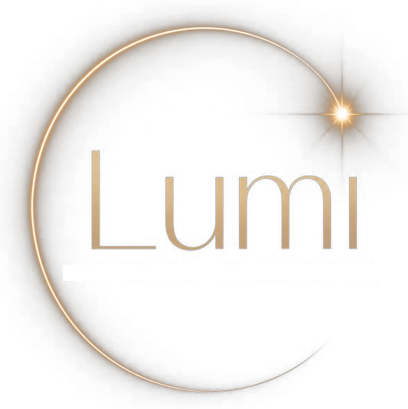

<title>Lumi</title>
<meta name="description" content="A concierge digital que atende o WhatsApp da sua clínica odontológica — e o painel de gestão que garante que você continua no controle.">
<link rel="preconnect" href="https://fonts.googleapis.com">
<link rel="preconnect" href="https://fonts.gstatic.com" crossorigin>
<link href="https://fonts.googleapis.com/css2?family=Playfair+Display:ital,wght@0,400;0,500;0,600;1,400&family=Raleway:wght@300;400;500;600;700&display=swap" rel="stylesheet">
<style>
  :root {
    --bg: #0b0a08;
    --bg-elevated: #17140f;
    --bg-elevated-2: #1e1a13;
    --line: rgba(184, 154, 104, 0.22);
    --line-soft: rgba(184, 154, 104, 0.12);
    --gold: #b89a68;
    --gold-bright: #d9bd8a;
    --text: #ede7da;
    --text-dim: #a89e8c;
    --text-faint: #776e5e;
    --sucesso: #7fbf8f;
    --font-display: "Playfair Display", "Iowan Old Style", Georgia, serif;
    --font-body: "Raleway", -apple-system, "Segoe UI", sans-serif;
  }

  * { box-sizing: border-box; }
  body {
    margin: 0;
    background: var(--bg);
    color: var(--text);
    font-family: var(--font-body);
    font-weight: 300;
    line-height: 1.6;
    -webkit-font-smoothing: antialiased;
  }
  h1, h2, h3 { font-family: var(--font-display); font-weight: 500; text-wrap: balance; color: var(--text); margin: 0; }
  p { margin: 0; }
  a { color: inherit; }
  ::selection { background: var(--gold); color: #14110c; }
  @media (prefers-reduced-motion: reduce) { * { animation-duration: 0.001ms !important; transition-duration: 0.001ms !important; } }

  .envelope { max-width: 1080px; margin: 0 auto; padding: 0 28px; }

  /* ---------- header ---------- */
  header {
    position: sticky; top: 0; z-index: 20;
    background: rgba(11, 10, 8, 0.86);
    backdrop-filter: blur(10px);
    border-bottom: 1px solid var(--line-soft);
  }
  header .envelope { display: flex; align-items: center; justify-content: space-between; padding-top: 14px; padding-bottom: 14px; }
  .marca-topo { display: flex; align-items: center; gap: 10px; }
  .marca-topo img { height: 34px; width: auto; display: block; }
  .marca-topo span { font-family: var(--font-display); font-size: 20px; letter-spacing: 0.5px; }

  .botao {
    display: inline-flex; align-items: center; gap: 8px;
    font-family: var(--font-body); font-weight: 600; font-size: 14px; letter-spacing: 0.3px;
    padding: 12px 22px; border-radius: 999px; border: 1px solid var(--gold);
    text-decoration: none; white-space: nowrap; cursor: pointer;
    transition: transform 0.15s ease, box-shadow 0.15s ease, background 0.15s ease;
  }
  .botao-ouro { background: linear-gradient(180deg, var(--gold-bright), var(--gold)); color: #14110c; border-color: transparent; }
  .botao-ouro:hover { transform: translateY(-1px); box-shadow: 0 8px 24px rgba(184, 154, 104, 0.28); }
  .botao-fantasma { background: transparent; color: var(--text); border-color: var(--line); }
  .botao-fantasma:hover { border-color: var(--gold); color: var(--gold-bright); }
  .botao-pequeno { padding: 9px 16px; font-size: 12.5px; }

  /* ---------- hero ---------- */
  .hero { padding: 96px 0 80px; text-align: center; position: relative; overflow: hidden; }
  .hero::before {
    content: ""; position: absolute; top: -220px; left: 50%; transform: translateX(-50%);
    width: 900px; height: 560px;
    background: radial-gradient(ellipse at center, rgba(184, 154, 104, 0.16) 0%, rgba(184, 154, 104, 0) 68%);
    pointer-events: none;
  }
  .hero img.marca-hero { width: 168px; height: auto; display: block; margin: 0 auto 8px; position: relative; }
  .eyebrow {
    font-size: 12.5px; letter-spacing: 2.2px; text-transform: uppercase; color: var(--gold-bright);
    font-weight: 600; margin-bottom: 22px; position: relative;
  }
  .hero h1 { font-size: clamp(34px, 5.4vw, 58px); line-height: 1.14; max-width: 820px; margin: 0 auto; position: relative; }
  .hero h1 em { font-style: italic; color: var(--gold-bright); }
  .hero .sub {
    max-width: 560px; margin: 26px auto 0; color: var(--text-dim); font-size: 17px; line-height: 1.7; position: relative;
  }
  .hero .acoes { display: flex; gap: 14px; justify-content: center; margin-top: 40px; flex-wrap: wrap; position: relative; }
  .hero .selo-producao {
    margin-top: 30px; display: inline-flex; align-items: center; gap: 8px;
    font-size: 12.5px; letter-spacing: 0.6px; color: var(--text-faint); position: relative;
  }
  .hero .selo-producao .ponto { width: 7px; height: 7px; border-radius: 50%; background: var(--sucesso); box-shadow: 0 0 8px rgba(127, 191, 143, 0.7); }

  /* ---------- section scaffolding ---------- */
  section { padding: 88px 0; border-top: 1px solid var(--line-soft); }
  .cabecalho-secao { max-width: 620px; margin: 0 auto 56px; text-align: center; }
  .cabecalho-secao .eyebrow { margin-bottom: 14px; }
  .cabecalho-secao h2 { font-size: clamp(26px, 3.4vw, 36px); }
  .cabecalho-secao p { color: var(--text-dim); margin-top: 16px; font-size: 15.5px; }

  /* ---------- caminhos (Simples Dental / Standalone) ---------- */
  .caminhos { display: grid; grid-template-columns: 1fr 1fr; gap: 22px; }
  .caminho {
    background: var(--bg-elevated); border: 1px solid var(--line); border-radius: 4px; padding: 32px 30px;
  }
  .caminho .rotulo { font-size: 12px; letter-spacing: 1.6px; text-transform: uppercase; color: var(--gold); font-weight: 600; }
  .caminho h3 { font-size: 21px; margin-top: 10px; }
  .caminho p { color: var(--text-dim); font-size: 14.5px; margin-top: 12px; line-height: 1.65; }

  /* ---------- painel: feature grid ---------- */
  .painel-vitrine {
    background: var(--bg-elevated); border: 1px solid var(--line); border-radius: 4px;
    padding: 8px; margin-top: 8px;
  }
  .painel-vitrine-topo {
    display: flex; align-items: center; gap: 8px; padding: 12px 16px; border-bottom: 1px solid var(--line-soft);
  }
  .painel-vitrine-topo span { width: 9px; height: 9px; border-radius: 50%; background: var(--line); }
  .painel-vitrine-topo small { margin-left: 8px; font-size: 12px; letter-spacing: 0.8px; color: var(--text-faint); }
  .grade-recursos { display: grid; grid-template-columns: repeat(3, 1fr); gap: 1px; background: var(--line-soft); }
  .recurso {
    background: var(--bg-elevated); padding: 30px 26px; display: flex; flex-direction: column; gap: 10px; min-height: 168px;
  }
  .recurso svg { width: 22px; height: 22px; color: var(--gold); }
  .recurso h4 { font-family: var(--font-body); font-weight: 600; font-size: 15px; color: var(--text); letter-spacing: 0.2px; }
  .recurso p { font-size: 13.5px; color: var(--text-dim); line-height: 1.6; }

  /* ---------- IA Auxilia IN Dirige banner ---------- */
  .maxima {
    text-align: center; padding: 64px 0; position: relative;
  }
  .maxima blockquote {
    font-family: var(--font-display); font-style: italic; font-size: clamp(24px, 3.6vw, 38px);
    color: var(--gold-bright); max-width: 720px; margin: 0 auto; line-height: 1.4;
  }
  .maxima cite { display: block; margin-top: 20px; font-style: normal; font-size: 13px; letter-spacing: 1.4px;
    text-transform: uppercase; color: var(--text-faint); }

  /* ---------- confianca ---------- */
  .confianca-lista { display: grid; grid-template-columns: repeat(3, 1fr); gap: 28px; margin-top: 8px; }
  .confianca-item { padding-left: 20px; border-left: 2px solid var(--line); }
  .confianca-item h4 { font-family: var(--font-body); font-weight: 600; font-size: 14.5px; color: var(--text); margin-bottom: 8px; }
  .confianca-item p { font-size: 13.5px; color: var(--text-dim); line-height: 1.6; }

  /* ---------- planos ---------- */
  .planos { display: grid; grid-template-columns: repeat(3, 1fr); gap: 22px; align-items: stretch; }
  .plano {
    background: var(--bg-elevated); border: 1px solid var(--line); border-radius: 4px; padding: 34px 28px;
    display: flex; flex-direction: column; gap: 18px;
  }
  .plano.destaque { border-color: var(--gold); background: var(--bg-elevated-2); position: relative; }
  .plano.destaque::before {
    content: "Mais escolhido"; position: absolute; top: -12px; left: 50%; transform: translateX(-50%);
    font-size: 11px; letter-spacing: 1px; text-transform: uppercase; color: #14110c; background: var(--gold-bright);
    padding: 4px 12px; border-radius: 999px; font-weight: 700;
  }
  .plano .nome { font-family: var(--font-display); font-size: 22px; }
  .plano .quem { font-size: 13px; color: var(--text-dim); }
  .plano ul { list-style: none; margin: 0; padding: 0; display: flex; flex-direction: column; gap: 11px; flex: 1; }
  .plano li { font-size: 13.5px; color: var(--text-dim); padding-left: 18px; position: relative; line-height: 1.55; }
  .plano li::before { content: "—"; position: absolute; left: 0; color: var(--gold); }
  .plano .botao { justify-content: center; width: 100%; margin-top: auto; }

  /* ---------- faq ---------- */
  .faq { max-width: 760px; margin: 0 auto; }
  details {
    border-bottom: 1px solid var(--line-soft); padding: 22px 0;
  }
  details summary {
    font-family: var(--font-body); font-weight: 500; font-size: 16px; cursor: pointer; list-style: none;
    display: flex; justify-content: space-between; align-items: center; gap: 16px; color: var(--text);
  }
  details summary::-webkit-details-marker { display: none; }
  details summary::after {
    content: "+"; font-family: var(--font-display); font-size: 22px; color: var(--gold); flex-shrink: 0;
    transition: transform 0.2s ease;
  }
  details[open] summary::after { transform: rotate(45deg); }
  details p { margin-top: 14px; font-size: 14.5px; color: var(--text-dim); line-height: 1.7; max-width: 640px; }

  /* ---------- cta final ---------- */
  .cta-final { text-align: center; }
  .cta-final h2 { font-size: clamp(28px, 4vw, 42px); max-width: 640px; margin: 0 auto; }
  .cta-final .sub { color: var(--text-dim); margin-top: 18px; font-size: 15.5px; }
  .cta-final .acoes { margin-top: 34px; }

  footer { border-top: 1px solid var(--line-soft); padding: 40px 0; }
  footer .envelope { display: flex; justify-content: space-between; align-items: center; flex-wrap: wrap; gap: 12px; }
  footer .marca-topo img { height: 24px; }
  footer .marca-topo span { font-size: 15px; }
  footer .direitos { font-size: 12.5px; color: var(--text-faint); }

  .anel-divisor { display: flex; justify-content: center; padding: 6px 0 0; }
  .anel-divisor svg { width: 34px; height: 34px; opacity: 0.55; }

  @media (max-width: 860px) {
    .caminhos, .grade-recursos, .confianca-lista, .planos { grid-template-columns: 1fr; }
    .grade-recursos { background: var(--line-soft); }
    header .botao span.rotulo-longo { display: none; }
    section { padding: 64px 0; }
    .hero { padding: 72px 0 56px; }
  }
</style>

<header>
  <div class="envelope">
    <div class="marca-topo">
      
      <span>Lumi</span>
    </div>
    <a class="botao botao-ouro botao-pequeno" href="https://wa.me/5511981174657?text=Ol%C3%A1%21%20Vi%20o%20site%20da%20Lumi%20e%20queria%20saber%20mais." target="_blank" rel="noopener">Falar no WhatsApp</a>
  </div>
</header>

<main>
  <section class="hero" style="border-top:none; padding-top: 88px;">
    <div class="envelope">
      
      <p class="eyebrow">Concierge digital para clínicas odontológicas</p>
      <h1>IA Auxilia. <em>IN Dirige.</em></h1>
      <p class="sub">A Lumi atende o WhatsApp da sua clínica 24 horas por dia — agenda, confirma, cancela e recupera paciente sozinha. Você continua no controle, através de um painel de gestão completo por trás da conversa.</p>
      <div class="acoes">
        <a class="botao botao-ouro" href="https://wa.me/5511981174657?text=Ol%C3%A1%21%20Vi%20o%20site%20da%20Lumi%20e%20queria%20saber%20mais." target="_blank" rel="noopener">Falar no WhatsApp</a>
        <a class="botao botao-fantasma" href="#painel">Ver o que tem por trás</a>
      </div>
      <p class="selo-producao"><span class="ponto"></span> Em uso real, em produção, numa clínica odontológica</p>
    </div>
  </section>

  <section id="caminhos" style="border-top:none;">
    <div class="envelope">
      <div class="cabecalho-secao">
        <p class="eyebrow">Como ela entra na sua clínica</p>
        <h2>Funciona do jeito que a sua agenda já funciona</h2>
        <p>Sem trocar de sistema, e sem precisar ter nenhum sistema hoje.</p>
      </div>
      <div class="caminhos">
        <div class="caminho">
          <p class="rotulo">Já usa um sistema de agenda</p>
          <h3>Integração direta</h3>
          <p>A Lumi passa a operar dentro do sistema que sua recepção já usa hoje — sem substituir nada, sem migrar histórico, sem treinar a equipe num sistema novo.</p>
        </div>
        <div class="caminho">
          <p class="rotulo">Não usa nenhum sistema</p>
          <h3>Lumi Standalone</h3>
          <p>Construímos a agenda do zero, junto com a concierge digital. Não precisa ter nada pronto hoje — o onboarding é mais leve justamente por não depender de integrar com terceiro nenhum.</p>
        </div>
      </div>
    </div>
  </section>

  <section id="painel">
    <div class="envelope">
      <div class="cabecalho-secao">
        <p class="eyebrow">O que nenhum chatbot tem</p>
        <h2>Por trás da conversa, um painel de gestão completo</h2>
        <p>A maioria das assistentes de IA é só a conversa. A Lumi vem com o painel que garante que você nunca perde a visão — nem o controle.</p>
      </div>

      <div class="painel-vitrine">
        <div class="painel-vitrine-topo">
          <span></span><span></span><span></span>
          <small>PAINEL ADMINISTRATIVO — LUMI</small>
        </div>
        <div class="grade-recursos">
          <div class="recurso">
            <svg viewBox="0 0 24 24" fill="none" stroke="currentColor" stroke-width="1.4"><rect x="3" y="5" width="18" height="16" rx="1.5"></rect><path d="M3 9h18M8 3v4M16 3v4"></path></svg>
            <h4>Agenda</h4>
            <p>Visão em tempo real do que está marcado — a mesma agenda que sua recepção já usa, sem cópia paralela.</p>
          </div>
          <div class="recurso">
            <svg viewBox="0 0 24 24" fill="none" stroke="currentColor" stroke-width="1.4"><path d="M4 5h16v11H8l-4 4V5z"></path></svg>
            <h4>Mensagens</h4>
            <p>Histórico de toda conversa, com a equipe podendo assumir a qualquer momento — a IA nunca fica sem supervisão.</p>
          </div>
          <div class="recurso">
            <svg viewBox="0 0 24 24" fill="none" stroke="currentColor" stroke-width="1.4"><path d="M3 17l6-7 4 4 8-9"></path><path d="M15 5h6v6"></path></svg>
            <h4>Oportunidades</h4>
            <p>Funil de resgate: recupera sozinha o paciente que começou a marcar consulta e sumiu no meio do caminho.</p>
          </div>
          <div class="recurso">
            <svg viewBox="0 0 24 24" fill="none" stroke="currentColor" stroke-width="1.4"><rect x="4" y="10" width="3.4" height="10"></rect><rect x="10.3" y="5" width="3.4" height="15"></rect><rect x="16.6" y="13" width="3.4" height="7"></rect></svg>
            <h4>Analytics</h4>
            <p>Consultas criadas, confirmadas, canceladas, taxa de recuperação — números reais, não estimativa.</p>
          </div>
          <div class="recurso">
            <svg viewBox="0 0 24 24" fill="none" stroke="currentColor" stroke-width="1.4"><circle cx="12" cy="12" r="8.4"></circle><path d="M12 8v4l2.6 2.6"></path></svg>
            <h4>Pendências</h4>
            <p>Tudo que a Lumi encaminhou pra um humano decidir, com urgências sempre em primeiro lugar.</p>
          </div>
          <div class="recurso">
            <svg viewBox="0 0 24 24" fill="none" stroke="currentColor" stroke-width="1.4"><circle cx="12" cy="12" r="2.6"></circle><path d="M12 3v2.4M12 18.6V21M4.9 4.9l1.7 1.7M17.4 17.4l1.7 1.7M3 12h2.4M18.6 12H21M4.9 19.1l1.7-1.7M17.4 6.6l1.7-1.7"></path></svg>
            <h4>Configurações</h4>
            <p>Horários, pausar a Lumi pra todo mundo, e reconectar o WhatsApp sozinho — sem depender de suporte técnico.</p>
          </div>
        </div>
      </div>
    </div>
  </section>

  <div class="maxima">
    <div class="envelope">
      <blockquote>“A inteligência artificial cuida do repetitivo. Quem decide continua sendo você.”</blockquote>
      <cite>A lógica por trás de cada regra da Lumi</cite>
    </div>
  </div>

  <section id="confianca">
    <div class="envelope">
      <div class="cabecalho-secao">
        <p class="eyebrow">Confiança</p>
        <h2>Feita pra clínica de saúde, não adaptada de um bot genérico</h2>
      </div>
      <div class="confianca-lista">
        <div class="confianca-item">
          <h4>Dados isolados por clínica</h4>
          <p>Banco de dados e número de WhatsApp próprios de cada clínica — nunca uma base compartilhada entre clientes.</p>
        </div>
        <div class="confianca-item">
          <h4>Nunca inventa, nunca chuta</h4>
          <p>Toda confirmação passa pelo sistema de verdade primeiro. Fora do que ela sabe resolver, vira aviso pra um humano na hora.</p>
        </div>
        <div class="confianca-item">
          <h4>Monitorada de verdade</h4>
          <p>Rotina própria de checagem várias vezes ao dia, com alerta automático — e backup diário testado de ponta a ponta.</p>
        </div>
      </div>
    </div>
  </section>

  <section id="planos">
    <div class="envelope">
      <div class="cabecalho-secao">
        <p class="eyebrow">Investimento</p>
        <h2>Um plano pra cada tamanho de clínica</h2>
        <p>Valor combinado em conversa, conforme o porte e o que sua clínica precisa.</p>
      </div>
      <div class="planos">
        <div class="plano">
          <div>
            <p class="nome">Basic</p>
            <p class="quem">Um profissional</p>
          </div>
          <ul>
            <li>Agendar, confirmar, cancelar e remarcar via WhatsApp</li>
            <li>Lembretes automáticos de consulta</li>
            <li>Painel de Agenda e Mensagens</li>
          </ul>
          <a class="botao botao-fantasma" href="https://wa.me/5511981174657?text=Ol%C3%A1%21%20Vi%20o%20site%20da%20Lumi%20e%20queria%20saber%20mais." target="_blank" rel="noopener">Falar sobre este plano</a>
        </div>
        <div class="plano destaque">
          <div>
            <p class="nome">Pro</p>
            <p class="quem">Múltiplos profissionais</p>
          </div>
          <ul>
            <li>Tudo do Basic</li>
            <li>Funil de resgate automático</li>
            <li>Painel completo — Analytics, Oportunidades, Pendências</li>
          </ul>
          <a class="botao botao-ouro" href="https://wa.me/5511981174657?text=Ol%C3%A1%21%20Vi%20o%20site%20da%20Lumi%20e%20queria%20saber%20mais." target="_blank" rel="noopener">Falar sobre este plano</a>
        </div>
        <div class="plano">
          <div>
            <p class="nome">Advanced</p>
            <p class="quem">Multi-unidade</p>
          </div>
          <ul>
            <li>Tudo do Pro</li>
            <li>Múltiplas unidades e integrações extras</li>
            <li>Atendimento dedicado</li>
          </ul>
          <a class="botao botao-fantasma" href="https://wa.me/5511981174657?text=Ol%C3%A1%21%20Vi%20o%20site%20da%20Lumi%20e%20queria%20saber%20mais." target="_blank" rel="noopener">Fale conosco</a>
        </div>
      </div>
    </div>
  </section>

  <section id="faq">
    <div class="envelope">
      <div class="cabecalho-secao">
        <p class="eyebrow">Perguntas</p>
        <h2>O que toda clínica pergunta antes de decidir</h2>
      </div>
      <div class="faq">
        <details open>
          <summary>Preciso trocar de sistema de agenda?</summary>
          <p>Não, se você já usa um sistema — a Lumi passa a operar dentro dele. E se você não usa nenhum, também não precisa: a gente monta a agenda do zero, junto com a concierge digital.</p>
        </details>
        <details>
          <summary>Meus pacientes vão perceber que é um robô?</summary>
          <p>A Lumi nunca esconde que é uma concierge digital — mas o objetivo nunca foi parecer humana, é ser útil e rápida. E a qualquer momento a equipe pode assumir a conversa direto pelo painel.</p>
        </details>
        <details>
          <summary>E se ela errar e prejudicar a clínica?</summary>
          <p>Ela nunca confirma nada sem checar a agenda de verdade primeiro — não existe "ela inventou um horário". Qualquer coisa fora do que ela sabe resolver vira uma pendência pra um humano decidir.</p>
        </details>
        <details>
          <summary>Meus dados ficam seguros?</summary>
          <p>Cada clínica tem banco de dados e número de WhatsApp próprios, isolados — nunca uma base compartilhada entre clientes.</p>
        </details>
        <details>
          <summary>E se o WhatsApp cair?</summary>
          <p>O painel mostra o status da conexão em tempo real, e a própria equipe consegue reconectar sozinha, gerando um QR code novo — sem depender de suporte técnico.</p>
        </details>
      </div>
    </div>
  </section>

  <section class="cta-final">
    <div class="envelope">
      <div class="anel-divisor">
        <svg viewBox="0 0 40 40" fill="none" stroke="var(--gold)" stroke-width="1.2"><circle cx="20" cy="20" r="15" stroke-dasharray="86 8"></circle></svg>
      </div>
      <h2>Vamos ver a Lumi funcionando na sua clínica?</h2>
      <p class="sub">Uma conversa de 15 minutos, sem compromisso — você vê a Lumi respondendo de verdade, não um slide.</p>
      <div class="acoes">
        <a class="botao botao-ouro" href="https://wa.me/5511981174657?text=Ol%C3%A1%21%20Vi%20o%20site%20da%20Lumi%20e%20queria%20saber%20mais." target="_blank" rel="noopener">Falar no WhatsApp agora</a>
      </div>
    </div>
  </section>
</main>

<footer>
  <div class="envelope">
    <div class="marca-topo">
      
      <span>Lumi</span>
    </div>
    <p class="direitos">Concierge digital para clínicas odontológicas.</p>
  </div>
</footer>
